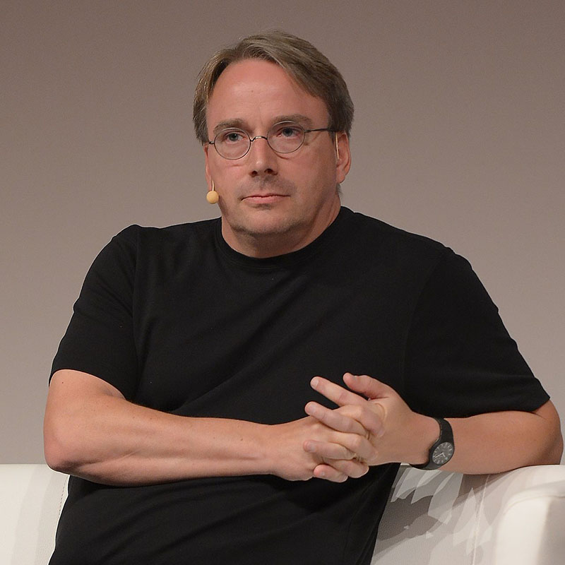

Do you use open source software?
Yes, I do every day.
Richard Stallman
Free software movement activist and programmer. The GNU project founder.
The GNU Project
The GNU is a free software, mass collaboration project announced by Richard Stallman on September 27, 1983.
GNU is a recursive acronym meaning "GNU's not Unix!"
GNU General Public License (GPL)
This license allowed software and the future generations of code derived from it to remain free for public use.
The Linux Kernel is provided under the GPL license
Linux
Linux kernel first released on September 17, 1991, by Linus Torvalds.
Linux contributions
Apache HTTP Server
Apache Server was one of the first web servers to run on Linux and this helped to increase the visibility and popularity of the operating system.
The Cathedral & the Bazaar

The main thesis of the book is that the open-source development model is a more efficient and effective way to produce high-quality software than the traditional, closed-source development model used by proprietary software companies.
"The Cathedral and the Bazaar" played a key role in the decision by Netscape to open-source their browser and helped to demonstrate the benefits of the open-source development model to the software industry as a whole.
"FREE SOFTWARE"
and
"OPEN SOURCE SOFTWARE"
The main difference is that free software places a greater emphasis on users' freedoms, while open source software focuses on the practical benefits of using and collaborating on open code.
The Open Source Initiative (OSI)
The non-profit organization dedicated to promoting open-source software, was founded in 1998 by Eric S. Raymond, Bruce Perens, and others.
The Open Source Definition
- Free Redistribution
- Source Code
- Derived Works
- Integrity of The Author's Source Code
- No Discrimination Against Persons or Groups
- No Discrimination Against Fields of Endeavor
- Distribution of License
- License Must Not Be Specific to a Product
- License Must Not Restrict Other Software
- License Must Be Technology-Neutral
Advantages of open source software
- Cost.
- Collaboration.
- Transparency.
- Flexibility.
- Security.
Disadvantages of open source software
- Lack of support.
- Quality.
- Complexity.
- Integration.
- Liability.
Open source software has revolutionized the way we develop and use technology. With its collaborative, community-driven approach, open source has enabled the creation of high-quality, free and accessible software for everyone.